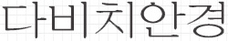
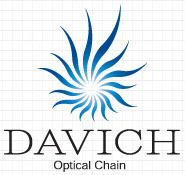

Home > 기업소개 > 회사CI
회사CI
CI 소개정보
- 다비치 안경의 심볼마크는
- 태양과 홍채를 모티브로 시작화시켜 단순화한 것으로 밝게 비추는 눈을 형상화하였습니다.
- 다비치는 세상을 맑고 밝게 다 비친다는 순수 우리말로
- 고객의 눈을 편안하게 다 보이게 한다는 뜻입니다.
- 
- 시그니쳐
- 
브랜드 칼라
- 다비치 안경의 브랜드 칼라는 전용색상을 의미합니다.
- 브랜드 칼라는 다비치 안경이 특정한 색을 상징으로 정하여 그 색채를 통일성 있게 의도적으로 사용해 나가는 것으로써, 색채면에서 다른 기업들과 명확하게 차별화하는 수단 입니다.
메뉴얼에 지정된 정확한 규정으로 색상사용을 하여야만이 다비치 안경의 이미지 통합이 올바른 방향으로 전개되는 것입니다.
Davich 블루
C100 + M45%
LG-LT 4060A
Panton-293c
Davich 다크블루
C100 + M45%
LG-LT 4060A
Panton-293c
Davich 블랙
C100 + M45%
LG-LT 4060A
Panton-293c